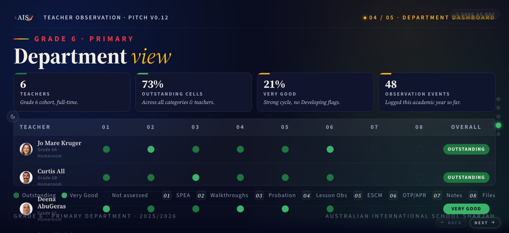
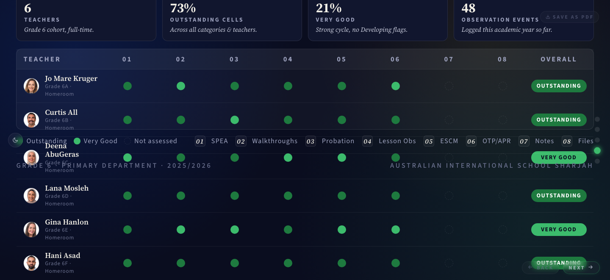
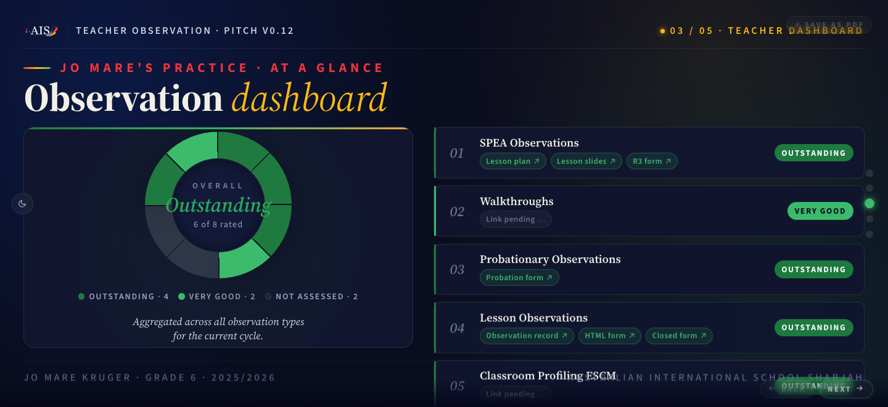
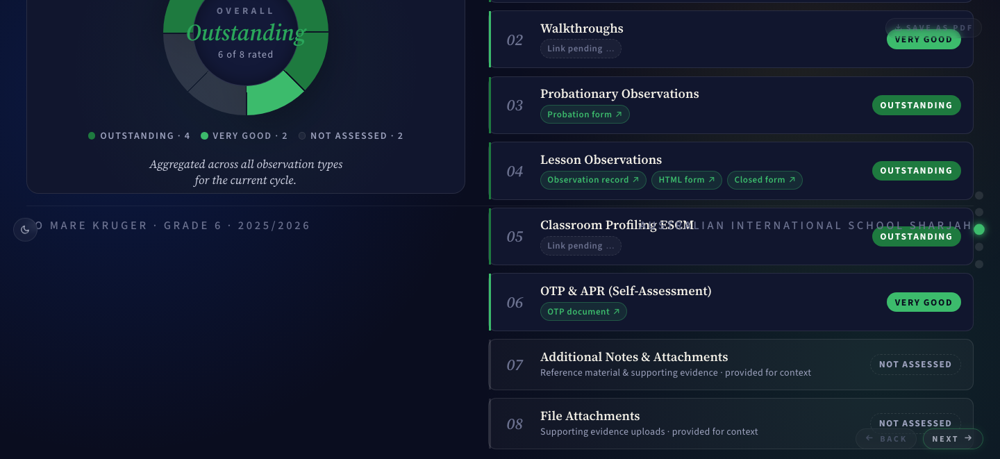
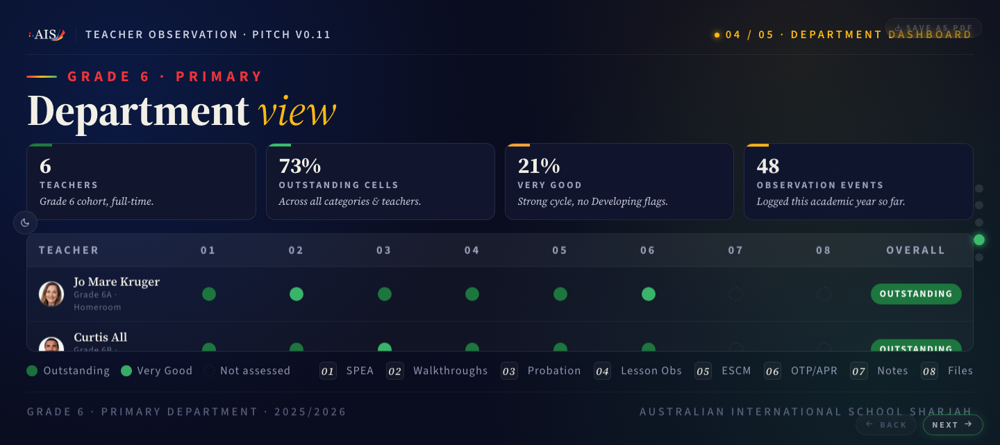

Handoff Brief · Data-Representation deck
The deck currently shipped to production (v0.12, commit 26c842b, live at rogerceaser21.github.io/Data-Representation/) is visually broken on MacBook at 100% zoom. Slides 3 and 4 have overlapping text and content rendered on top of page chrome. Slide 1 has a separate distortion problem (massive title, masthead overlapping itself, bio cut by footer). The fix Igor is shipping to principal Steven McLuckie next week is currently NOT presentable.
Two attempts (v0.11 + v0.12) were made to fix an original silent-clipping bug on slides 3 and 4. Both attempts produced fixes that pass headless-Chrome diagnostics but FAIL in real Chrome on Igor's MacBook. Igor lost confidence in the prior agent's judgment and is handing off to a fresh session.
You are explicitly being asked NOT to propose how to fix this. Document, observe, ask questions, get aligned with Igor before you touch any code. Bad past-agent took shortcuts with verification (used headless Chrome at viewport sizes that masked the real-Chrome problem) and shipped two consecutive broken versions.
1. What works · do NOT touch
- Lesson Observation form at
Assets/Lesson Observation Form/lesson-observation-form.html. Submit + lock + closed-record viewer all working. Wired to admin.user@ais.ae Apps Script (scriptId1wfwv-3le3lMFeiV6E_hghRQ3F2kAiInNaNlnQbipx4bLMFH9N0yRKXEL) writing to Sheet1KKgHe42JnRe5iA8iODRrh3UZHD93szZSDatQylivoAc. Tested end to end yesterday at v0.10. - R3 Evidence form at
Assets/R3/r3-evidence-form.html. Same architecture; new Sheet (1V1Nb8hTWN-FpDps2Q_-F0TBWBFnPHVBW_sicWk8XVKo) with 277 teachers loaded from staff Workspace Groups. Submit + GET round-trip verified at v0.10. - The redirect stub at the old root
lesson-observation-form.htmlpath that forwards to the moved form. Don't delete it. - PDF export (the SAVE AS PDF button). v0.12's print CSS captures all slides expanded to full content. Verified via headless Chrome
--print-to-pdf. A copy is atimages/deck-pdf-export-works.pdffor reference. All 6 teachers visible on slide 4, all 8 categories with pill rows on slide 3 in the PDF. - Apps Script backends, both Sheets, the staff-groups teacher loader. Server-side untouched by v0.11/v0.12.
The bug is specifically about on-screen rendering of certain slides at MacBook viewport sizes. Nothing else needs fixing.
2. What is broken · visual evidence
All screenshots below taken from the live URL at https://rogerceaser21.github.io/Data-Representation/, captured via headless Chrome at viewport 1440x800 (approximates Igor's MacBook at 100% zoom, accounting for browser UI chrome).
2a. Slide 4 (Department dashboard) at v0.12 · BROKEN


2b. Slide 3 (Teacher dashboard) at v0.12 · less broken but not right


2c. Slide 1 (Teacher profile cover) at v0.12 · DIFFERENT bug
2d. Comparison · how slide 4 looked at v0.11 baseline (also broken, differently)

3. Bug timeline · v0.10 to v0.12
| Version | Commit | Date | What happened |
|---|---|---|---|
v0.10 |
d70c8c4 |
2026-05-28 | R3 Evidence Form + Lesson Observation reorg shipped. Forms and backend work end to end. Deck slides 3 + 4 silently clip content at 100% zoom (Igor spots this on 2026-05-29). |
v0.11 |
935e2e6 |
2026-05-29 | First fix attempt. Added a "universal overflow safety net" (CSS .has-overflow + JS observer using ResizeObserver). Bumped versions, pushed, headless Chrome at 1440x900 said it worked. It didn't. Observer's scrollHeight reading was defeated by inner overflow: hidden on .cat-card and .matrix-wrap which silently clip content before .slide-content can measure it. Observer reported "no overflow" even though content was clipped. |
v0.12 |
26c842b |
2026-05-29 | Second fix attempt. Removed the inner overflow: hidden on .cat-card and .matrix-wrap. Observer now correctly detects overflow (e.g., slide 4 reports 254px overflow at 1440x780). BUT removing inner clipping caused the content to render at its natural height beyond its flex-allocated bounds, visually OVERLAPPING the floor footer, matrix legend, page chrome, BACK/NEXT buttons. Looks worse than v0.11. Igor's screenshots show the catastrophe. |
The root layout problem (so the next agent understands the constraint)
The deck uses display: flex; flex-direction: column on every .slide and .slide-content. Inner data containers (.matrix-wrap for slide 4, .dashboard-grid for slide 3) are flex: 1 so they fill the slide's remaining height. This gives a polished "matrix fills the slide" look when content fits.
When content density exceeds the available space:
- With inner
overflow: hidden(v0.10 / v0.11 state): flex compresses the children, the inneroverflow: hiddensilently clips the overflowing rows. Observer at.slide-contentlevel cannot see the clipped content because the inner clip happens before it measures. - Without inner
overflow: hidden(v0.12 state): flex still compresses the children to their flex-allocated space, but the natural content RENDERS past those bounds, visually overlapping subsequent flex children (like.floor) and page chrome.
Neither approach is correct. The architecture assumption that "inner containers fill the slide AND clip silently" conflicts with "slide content scrolls when it overflows." The prior agent failed to resolve this architecture conflict.
4. Architecture · files, IDs, deploy chain
4a. Key files in this repo
4b. Live URLs
4c. The frontend-slides skill (the deck was generated from this)
.slide.has-overflow CSS block + @media print rules. These are now baked into the skill and would propagate to every future deck. The next agent may want to revert these skill changes.4d. Deploy chain (per CLAUDE.md)
# HTML changes
edit master, bump version labels (cover term-tag, masthead .school text on 4 slides, P5 floor, version-badge, both form footers)
git add -p && git commit -m "vX.Y · ..."
git tag vX.Y && git push origin main --tags
# Pages auto-rebuild is FLAKY, force with:
gh api -X POST repos/Rogerceaser21/Data-Representation/pages/builds
# Large pushes may fail with HTTP 400. Fix:
git config http.postBuffer 5242880005. What was tried and why each attempt failed
5a. v0.11 · "universal overflow safety net" via JS observer
What was added
- New CSS in
index.html(~35 lines):.slide.has-overflow .slide-content { overflow-y: auto }, thin scrollbar styling, bottom fade gradient via::after. - New JS observer IIFE (~50 lines): uses
ResizeObserveron every.slide-content, measuresscrollHeightvsclientHeight + 4, toggles.has-overflowclass. Listens for resize, fontsready, image loads, theme changes. - Wheel + touch hijack edge-check: when active slide has scroll room and user isn't at the relevant edge, return early (let browser scroll natively).
goTo()resets scrollTop on outgoing slide so re-entering starts at top.- Print CSS: expand slides for PDF export.
- Same CSS + JS snippets appended to
~/.claude/skills/frontend-slides/viewport-base.cssandhtml-template.md.
Why it failed
The observer measures .slide-content.scrollHeight vs clientHeight. When inner descendants have overflow: hidden AND are flex-compressed, they report their post-clip size to their parent. The parent .slide-content only sees the post-clip rendered size, NOT the natural content size. Observer returns false even though content is clipped.
The prior agent did not test in real Chrome before shipping. Headless Chrome at full window-size 1440x900 had a 900px effective viewport (no browser chrome) so content fit and the observer correctly did not fire. The prior agent interpreted this as "the fix works" and shipped. Real Chrome on Igor's MacBook has ~120px of browser chrome, leaving ~780px effective viewport, where content overflowed and the inner-clip-defeats-observer bug manifested.
5b. v0.12 · "release inner overflow:hidden" so the observer can measure correctly
What was changed
- Removed
overflow: hiddenfrom.cat-cardinindex.html(was at line 636). - Removed
overflow: hiddenfrom.matrix-wrapinindex.html(was at line 775). - Added a comment to
SKILL.mdwarning future deck authors against inneroverflow: hiddenon flex children.
Why it failed
The observer now correctly detects overflow (slide 3 reports 272px overflow, slide 4 reports 220px at MacBook viewport). The .has-overflow class is applied. .slide-content goes overflow-y: auto. Scrollbar appears.
But the visual layout is destroyed. The .matrix-wrap still has flex: 1, which caps its flex-allocated space to remaining slide-content height. With overflow: visible, its natural content (all 6 rows) renders at natural height, EXTENDING BEYOND the flex-allocated bounds. Other flex children of .slide-content (the matrix-footer with the legend, the .floor with the slide footer) stay at THEIR flex-allocated positions. Result: matrix rows visually overlap the floor footer + page chrome.
The prior agent took screenshots via headless Chrome and INTERPRETED them as showing a working state, missing that the page-chrome overlap was visible in the screenshots. Specifically: Igor pasted screenshots that clearly show "GRADE 6 · PRIMARY DEPARTMENT · 2025/2026" text appearing INSIDE the teacher matrix, overlapping rows. The prior agent should have caught this in its own screenshot before shipping but did not.
5c. Slide 1 distortion · status: unknown / not reproduced in headless
Igor pasted a screenshot of slide 1 in v0.12 showing the title "Jo Mare Kruger" rendered at very large size with masthead text overlapping itself ("TEACHER PROFILE" text crashes into "AUSTRALIAN INTERNATIONAL SCHOOL · SHARJAH"). The bio paragraph at the bottom is cut off by the floor footer.
Headless Chrome at 1440x800 does not reproduce this. The cover renders normally. This suggests the bug is triggered by something specific to Igor's environment that headless Chrome doesn't replicate. Diagnosis must start with asking Igor for his real-Chrome window.innerWidth, window.innerHeight, and devicePixelRatio before any code changes.
6. Existing docs and memory the prior agent left behind
Project docs (commit to repo)
CLAUDE.mdat project root. Bootstrap doc with file map, hard rules, deploy chain, identity/auth context. Read first..planning/v0.10-r3-form-checklist.mddocuments the v0.10 R3-form-build phase plan. Marked complete..planning/may also contain the rejected-then-revised plan from earlier today at/Users/igor/.claude/plans/picture-1-100-frolicking-parasol.md(lives outside the repo, in Claude plans directory).
Memory files (per-project, at ~/.claude/projects/.../memory/)
feedback_no_em_dashes.md· Igor strongly dislikes em dashes (—) and en dashes (–). Use commas, periods, parens, semicolons, sentence breaks. Hyphens in compound words are fine.feedback_broaden_scope_for_systemic_bugs.md· when fixing bugs that come from shared defaults / doctrines / templates, fix the shared layer, not just the failing case. Igor explicitly rejected a narrow fix earlier today.feedback_karpathy_discipline.md· 4 principles: think before coding, simplicity first, surgical changes, goal-driven execution.feedback_version_visibility.md· every push bumps the visible version label AND creates a matching git tag.feedback_dont_relitigate_decisions.md· once Igor has made a call, execute. Don't re-raise the same concern.feedback_infer_from_context.md· don't ask about things derivable from repo state.user_role.md· Igor at AIS Sharjah, now Super Admin on @ais.ae, principal Steven McLuckie is the key stakeholder.project_data_representation.md· initiative context, current v0.10 status (does not yet mention v0.11/v0.12 because those were today and the memory wasn't updated after the failures).project_r3_evidence_form.md· R3 form architecture, IDs, schema.feedback_workspace_policy_apps_script.md· Apps Script auth context; migration history.
Skill changes (outside repo · ~/.claude/skills/frontend-slides/)
The prior agent edited viewport-base.css, SKILL.md, and html-template.md to bake in the v0.11/v0.12 "fix" so future decks would have the same safety net. Since v0.12's fix is itself broken, these skill changes propagate the broken approach to any future deck the user generates. The next agent should consider reverting the skill changes or rewriting them to match whatever the correct fix turns out to be.
7. Open questions and unknowns
window.innerWidth × window.innerHeight × devicePixelRatio when the slide-1 distortion is visible? Headless at 1440x800 doesn't reproduce it.git log -p ~/.claude/skills/frontend-slides/SKILL.md may not be tracked (skill files are likely not in git).8. Verification approach the prior agent SHOULD have used
The prior agent verified via headless Chrome with --window-size=1440,900, which has a full 900px viewport (no browser UI chrome). This masked the bug. The bug only reproduces at viewport heights below ~830px because the slide content density exceeds that.
Correct verification approach for future fixes:
- Use headless Chrome with
--window-size=1440,780or1440,800to simulate MacBook 1440x900 minus browser UI. - Take screenshots at multiple viewport sizes: 1024x600, 1280x720, 1366x768, 1440x780, 1920x1080, 2560x1440.
- Capture screenshots of EVERY slide at the TOP scroll position AND at the BOTTOM scroll position.
- LOOK at the screenshots. The prior agent had screenshots showing the floor-overlap-matrix problem but did not look carefully and shipped anyway.
- Cross-check with Igor in real Chrome before tagging the version. Do not ship to Pages until Igor confirms visually.
- Make verification an explicit todo with a clear pass/fail criterion before claiming a fix works.
9. State of repo as of this handoff
# commits in chronological order
26c842b v0.12 · release inner overflow:hidden so safety net actually catches dense slides [BROKEN]
935e2e6 v0.11 · universal overflow safety net for all slides [BROKEN]
0035d61 docs · sync CLAUDE.md + checklist to v0.10 state
d70c8c4 v0.10 · R3 Evidence Form + Lesson Observation reorg [last known good for slides 1, 2, 5]
1b0c509 v0.9 · migrate Apps Script + Web App to admin.user@ais.ae
ea1aaba v0.8 · Google Sheets submission + lock + closed-record viewer
# uncommitted noise (per CLAUDE.md hard rule 5, do not commit)
SPEA Data Report/Lesson Observation - Igor- 12_11.docx
excalidraw.log
# tags pushed
v0.8 v0.9 v0.10 v0.11 v0.1210. Igor's preferences (read before responding to him)
- Never use em dashes (—) or en dashes (–). Use commas, periods, parens, semicolons, or sentence breaks. Hyphens in compound words ("spreadsheet-first", "Sheets-first") are fine.
- When fixing a bug, broaden scope. If the failing case is one example of a shared default / doctrine that could cause the same class of failure elsewhere, fix the shared layer.
- Plan before coding. Igor's phrasing: "PLEASE TELL ME WHAT YOU THINK I WANT YOU TO DO. TELL ME HOW YOU PLAN TO IMPLEMENT THIS. AWAIT MY APPROVAL BEFORE YOU DO ANY CODING." When he says this, plan and ask, do not code.
- Verify before declaring done. The prior agent shipped two broken versions because it skipped real-browser verification. Igor lost trust as a result.
- Don't over-explain. Igor prefers concise answers. Lists and tables over paragraphs when the content allows.
- Don't relitigate decisions. Once he has made a call, execute. Don't re-raise the same concern with a different framing.